Kelimeleri raflara dizShelve the words
Raf etiketini boş rafa koy, o kategorinin kelimelerini bul: Elma, Kiraz, Karpuz → Meyveler!Put a shelf label on an empty shelf and find its words: Apple, Cherry, Watermelon → Fruits!
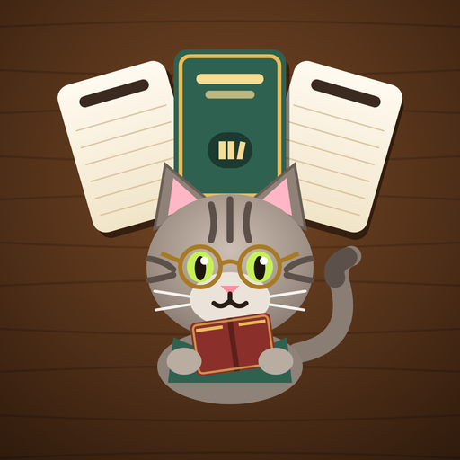
Kelimeleri kategorilerine göre raflara diz, Tekir’in sahafını toparla. Her bölüm çözülebilir, her gün yeni bir Günün Rafı.Sort words into their shelves and tidy up Tekir’s bookshop. Every level is solvable, with a new Daily Shelf every day.
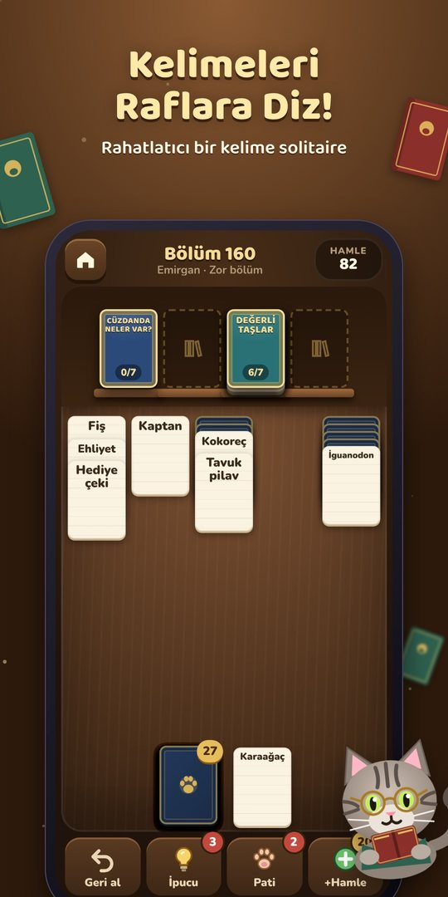
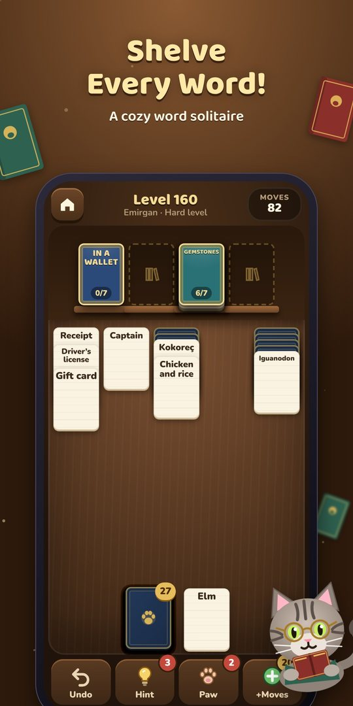
Ekran görüntüleriScreenshots
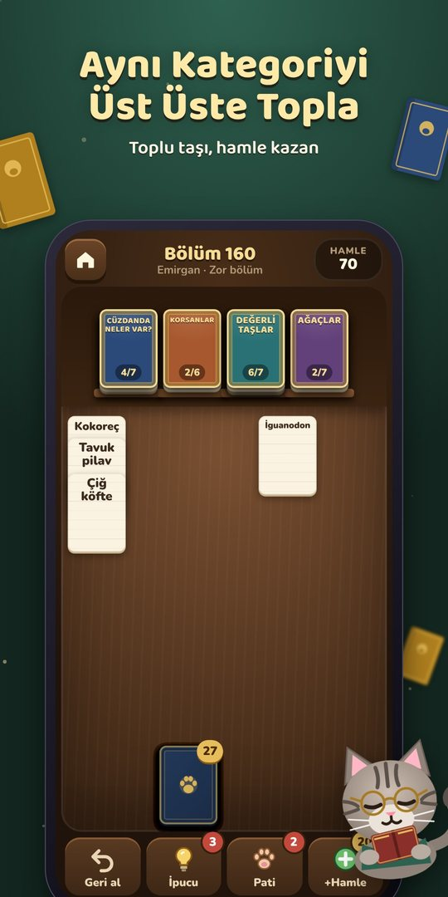
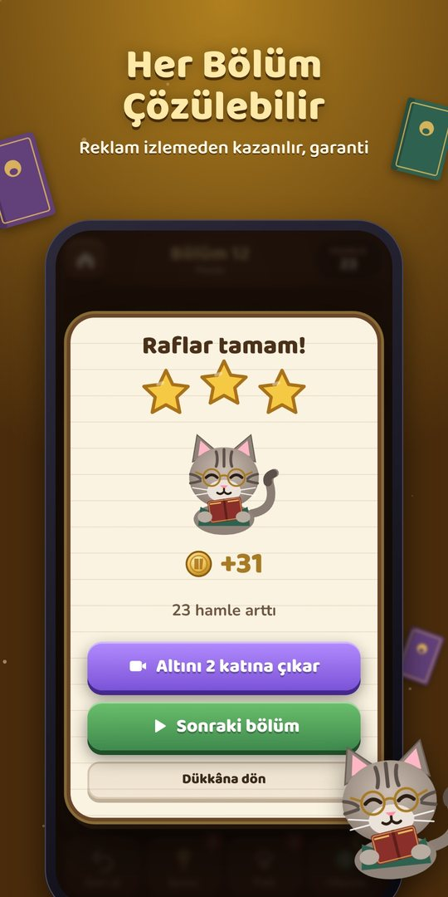
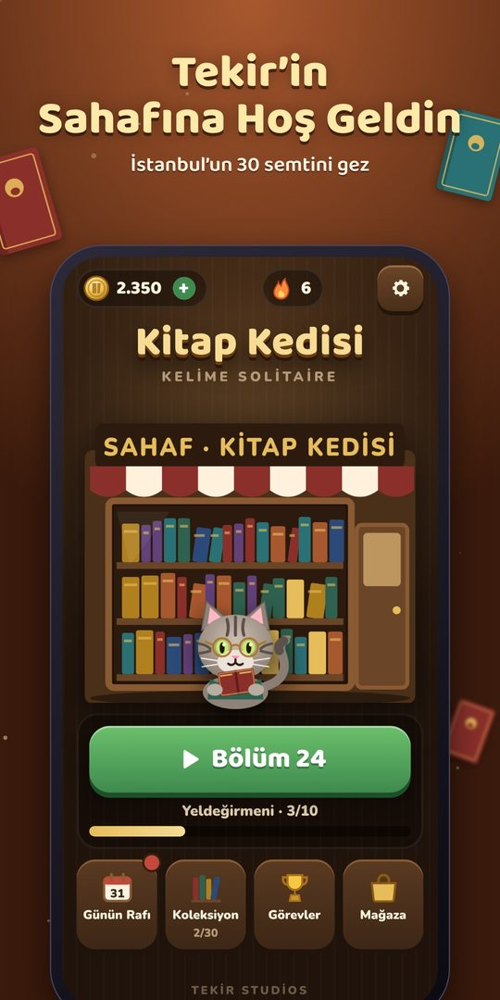
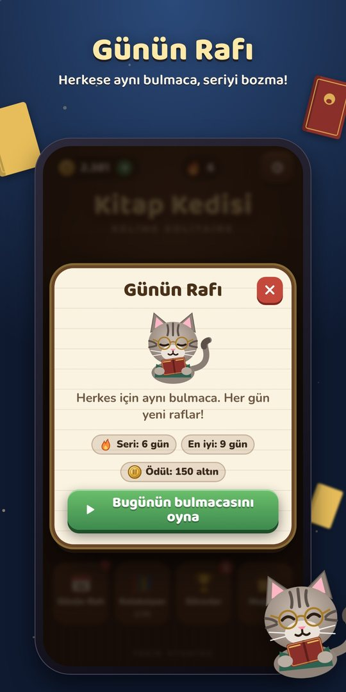
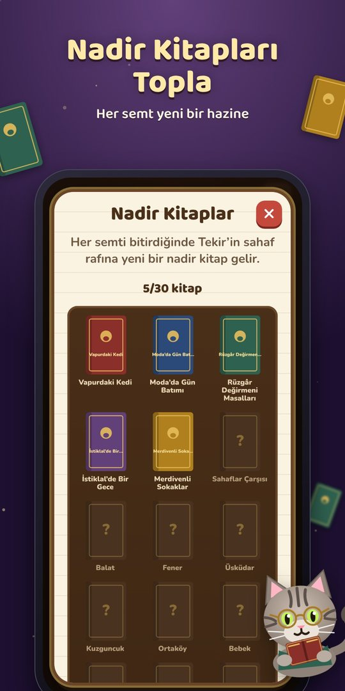
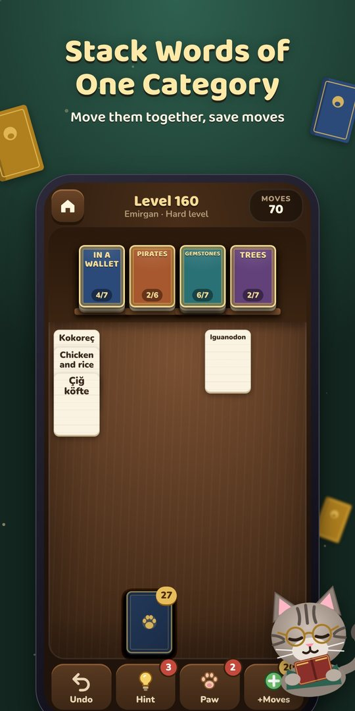
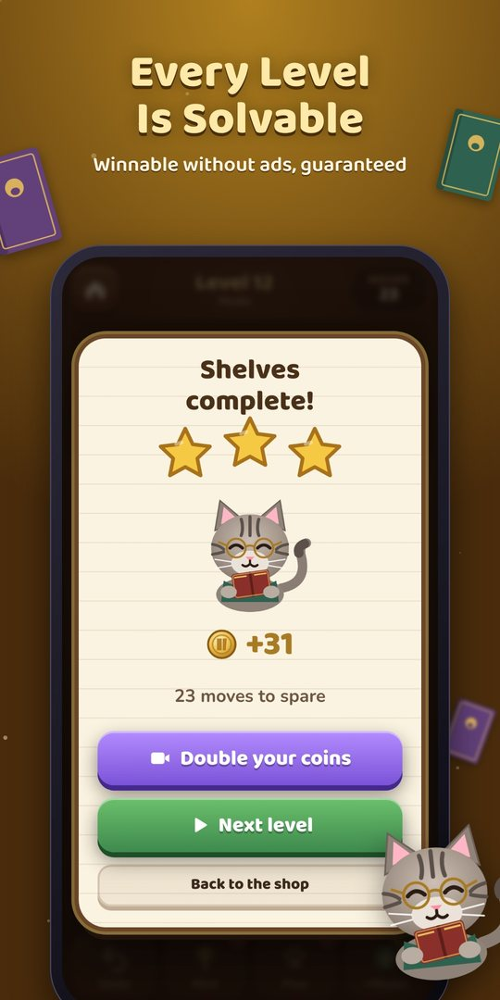
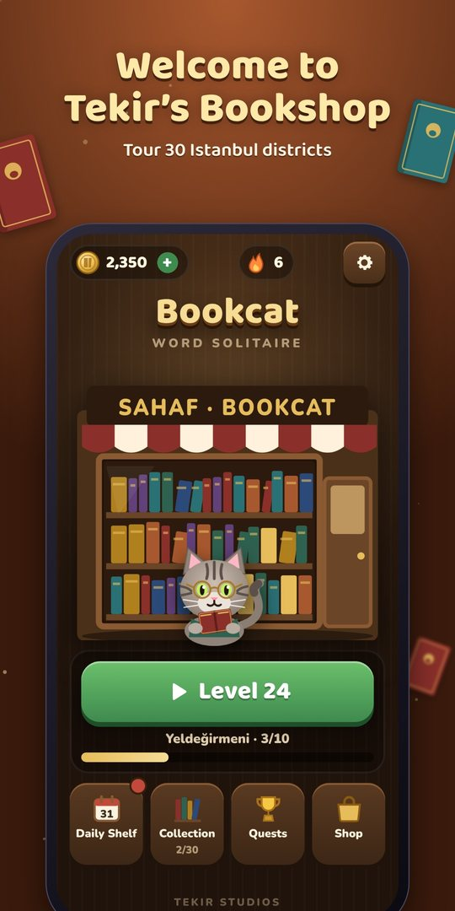
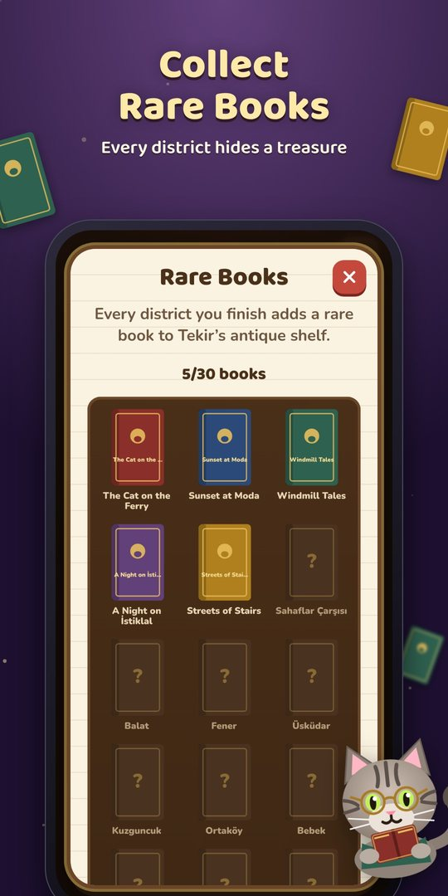
Raf etiketini boş rafa koy, o kategorinin kelimelerini bul: Elma, Kiraz, Karpuz → Meyveler!Put a shelf label on an empty shelf and find its words: Apple, Cherry, Watermelon → Fruits!
Bölümler bilgisayar tarafından çözülerek üretilir. Reklam izlemeden, satın almadan kazanılır.Levels are generated by actually solving them, so each one can be won without ads or purchases.
Kadıköy’den Topkapı’ya 30 semt, 300+ bölüm. Her semt Tekir’in antika rafına bir nadir kitap ekler.30 districts from Kadıköy to Topkapı and 300+ levels. Every district adds a rare book to Tekir’s antique shelf.
Herkes için aynı bulmaca. Serini koru, sonucunu arkadaşlarınla paylaş.The same puzzle for everyone. Keep your streak and share your result.
Meyvelerden dinozorlara, Türk kahvaltısından klasik romanlara. Türkçe, English, Deutsch, Español.From fruits to dinosaurs, from Turkish breakfast to classic novels. Türkçe, English, Deutsch, Español.
Can yok, bekleme yok, geri al bedava. İlk 12 bölüm tamamen reklamsız, bölüm ortasında asla reklam yok.No lives, no waiting, free undo. The first 12 levels are ad-free and there are never ads mid-level.
Sık sorulanlarFAQ
Gizlilik Politikası · Privacy Policy · Kullanım Koşulları · Terms of Use